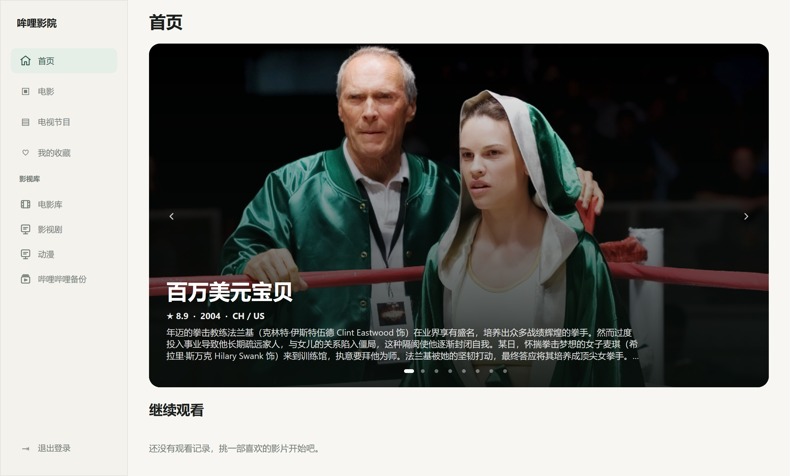
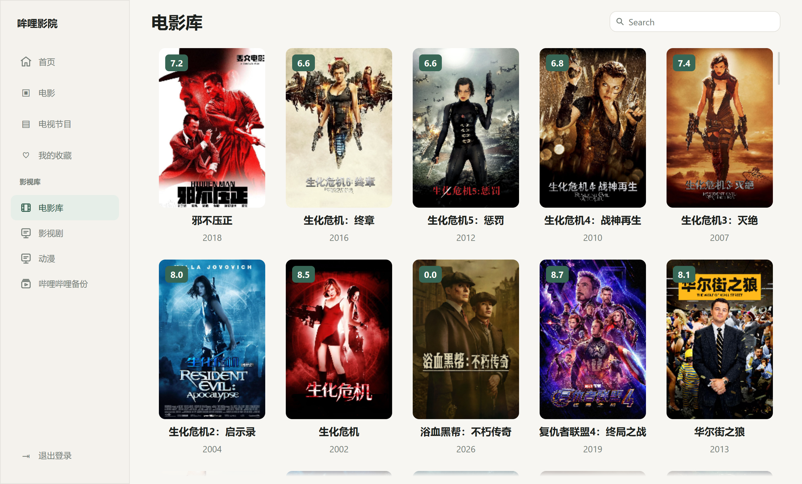
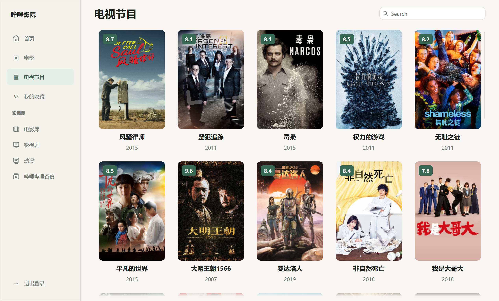
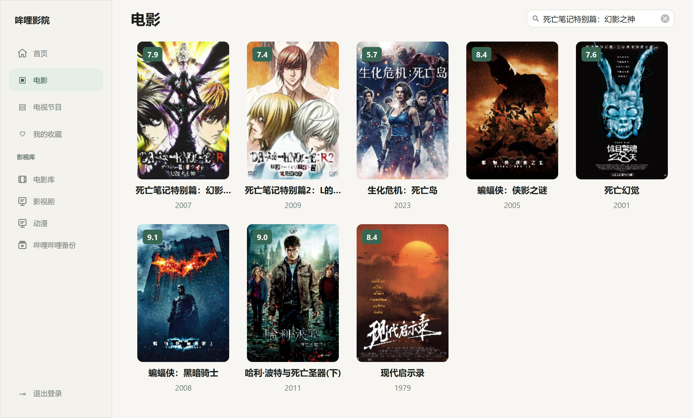
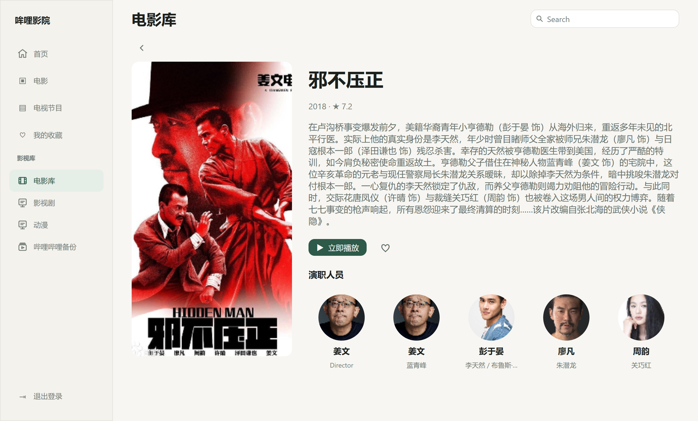
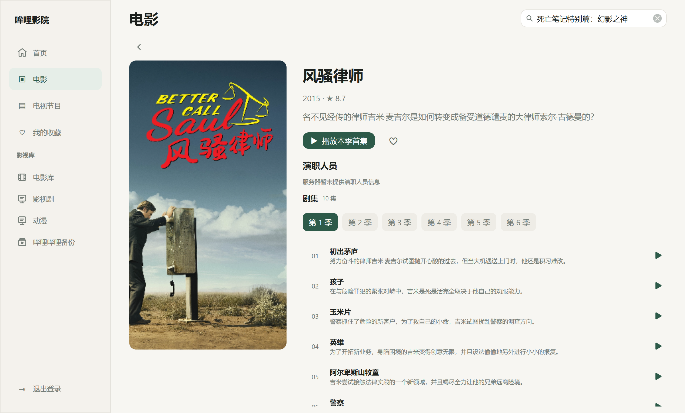

逛自己的片库
电影、剧集和影视库分开浏览。海报、年份和评分在卡片上就能扫一眼。
为飞牛影视打造的 Windows 客户端
片子在家里的飞牛影视，看片回到熟悉的 Windows 窗口。浏览电影和剧集，找到上次看到的位置，再接着看。

从打开应用开始
哞哩影院把看片时常用的几步放在一起，让你从整理好的媒体库，直接走到播放。
电影、剧集和影视库分开浏览。海报、年份和评分在卡片上就能扫一眼。
首页带回最近的观看记录。点开就能接上服务器保存的位置。
字幕、音轨、倍速、进度和全屏控制集中在播放器里。
真实客户端界面
以下截图均来自哞哩影院原生客户端，使用真实测试片库内容。页面里的影片海报和信息没有经过生成或替换。
按影视库浏览电影，扫一眼海报、评分和年份，再打开感兴趣的影片。

独立查看剧集库，海报和评分一目了然。

用片名缩小结果，少翻几页海报。

详情页保留简介、评分和演职人员，也可以直接收藏或开始播放。

按季度切换，集名与简介在同一页浏览，点一集就能进入播放。

测试片库的具体影视内容仅用于界面展示；连接自己的飞牛影视后，会显示账户有权限访问的媒体库。
从 GitHub Releases 获取安装包或便携版。
输入自己的服务器地址与账户信息。
浏览电影和剧集，或从记录中接着播放。